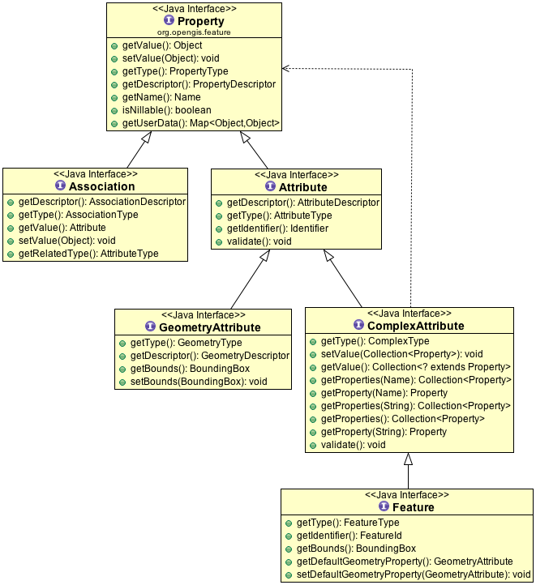
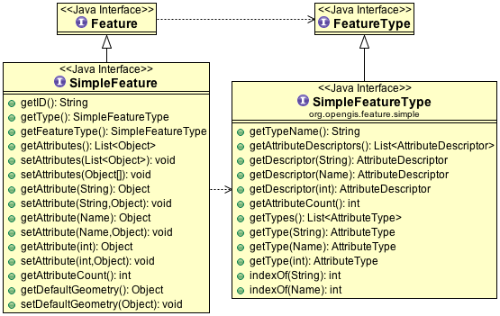

Feature¶
The Feature class is used to represents “something that can be drawn on a map”.
References:
- org.opengis.feature (javadocs)
- org.opengis.feature.simple
- Feature gt-main feature code examples
Data Structure¶
A GeoTools Feature stores your information in a data structure composed of Feature, Attributes, and Associations.
To directly create a Feature you can make use of FeatureFactory, or use a builder which makes things a little easier (as it fills in defaults):
//create the builder
SimpleFeatureBuilder builder = new SimpleFeatureBuilder(featureType);
//add the values
builder.add( "Canada" );
builder.add( 1 );
builder.add( 20.5 );
builder.add( new Point( -124, 52 ) );
//build the feature with provided ID
SimpleFeature feature = builder.buildFeature( "fid.1" );
In practice you can use a feature much like a java.util.Map to get and put values. The difference is that the “keys” are formally defined by the FeatureType (which helps us swap information between systems).
This is a little bit easier with SimpleFeature which allows direct access to attribute values:
feature.setAttribute( “turbidity”, 3.7 ); Object value = feature.getAttribute( “turbidity” ); // returns double 3.7 stored above
For more information see the examples listed in gt-main Feature.
Simple Feature¶
Most GIS data does not need a full dynamic type system with associations, operations, multiple values. With this in mind we have a “simple” extension of Feature and FeatureType providing to represent this kind of information.
A “simple” feature is an object that can be drawn on a map (ie a feature) that does not contain any complicated internal structure. A SimpleFeature is “flat” recording of key value pairs. At least one of the values should be a Geometry, and the list of keys is known ahead of time.
SimpleFeature may be used when:
- a feature’s properties are limited to mandatory GeometryAttribute and Attribute (no complex attributes or multiplicity allowed).
- Attributes values may be null; but each attribute must be represented
- order of attribute values is considered significant allowing values to be looked up by attribute name, or by the order they are listed
- These restrictions match the abilities of a simple shapefile or database table
Here are the additional methods made available:
Here is an example of constructing a SimpleFeatureType:
SimpleFeatureTypeBuilder b = new SimpleFeatureTypeBuilder();
//set the name
b.setName( "Flag" );
//add some properties
b.add( "name", String.class );
b.add( "classification", Integer.class );
b.add( "height", Double.class );
//add a geometry property
b.setCRS( DefaultGeographicCRS.WSG84 );
b.add( "location", Point.class );
//build the type
SimpleFeatureType type = b.buildFeatureType();